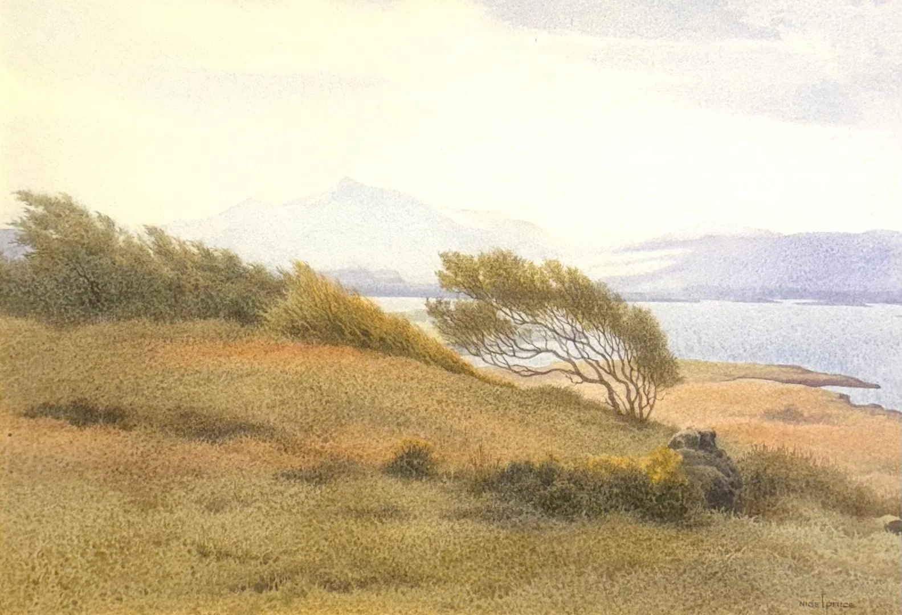

AMBLESIDE ARTIST
Nigel Price
Watercolor · Landscape

FEATURED WORK
Windswept
Nigel Price
WATERCOLOR
$1,900
A quiet expression of the natural landscape, reflecting the artist's lifelong connection to the Welsh countryside.
THE ARTIST
Shaped by
the Welsh
countryside.
Nigel Price was born in 1933 in the country town of Brecon, mid-Wales. Surrounded by soft green mountains, clear streams, wooded valleys and farmland, he developed an enduring connection to the countryside from an early age. The landscape, traditions and culture of rural Wales helped shape his lifelong identity as a countryman and conservationist.
At sixteen, Price began his professional life as a trainee draftsman in local government. From eighteen to twenty, he served in the survey section of the Royal Engineers, producing maps from aerial survey photographs.
After returning to civilian life, Price moved to the London area and continued working as a draftsman. A renewed interest in graphic design led him to Watford College of Art and Technology, where he was accepted on the strength of portfolio work created in his spare time. Following graduation, he joined a local company as a graphic design assistant.
A later position as a design manager with a major paper products corporation brought Price to the Peak District of Derbyshire, in England's North Midlands. The region's similarities to the countryside of his Welsh childhood kindled his interest in portraying rural landscapes through watercolor.
As promotions took him increasingly into management and marketing, Price found less creative fulfillment in his professional work. With family responsibilities to consider, he remained with the company while painting late into the nights and throughout weekends. From the mid-1980s, his watercolors were exhibited in galleries in England and the United States, entering numerous private and corporate collections in both countries.
THE WORK
A return
to the
landscape.
Price's connection to landscape began in Brecon, where mountains, streams, wooded valleys and grazing farmland formed the surroundings of his childhood.
Years later, the countryside of Derbyshire offered a familiar setting and a new creative outlet. Painting in watercolor became an absorbing pursuit alongside his corporate career, sustained through evenings and weekends.
His rural landscapes bring together two enduring strands of his life: a commitment to creative work and a deep attachment to the countryside.
SELECTED WORKS
The Collection
INQUIRE